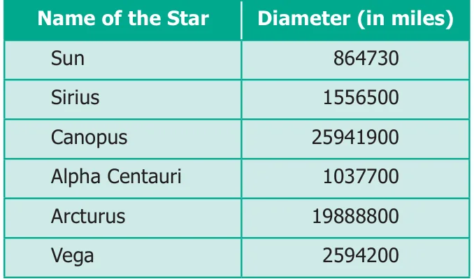

- Read the table and answer the following questions.

- Write the Canopus star's diameter in words, in the Indian and the International System.
- Write the sum of the place values of 5 in Sirius star's diameter in the Indian System.
- Eight hundred sixty four million seven hundred thirty. Write in Indian System.
- Write the diameter in words of Arcturus star in the International System.
- Write the difference of the diameters of Canopus and Arcturus stars in the Indian and the International Systems.
- Anbu asks Arivu Selvi to guess a five digit odd number. He gives the following hints.
- The digit in the 1000s place is less than 5
- The digit in the 100s place is greater than 6
- The digit in the 10s place is 8 What is Arivu Selvi answer? Does she give more than one answer?
- A Music concert is taking place in a stadium. A total of 7,689 chairs are to be put in rows of 90. (i) How many rows will there be? (ii) Will there be any chairs left over?
- Round off the seven digit number 29,75,842 to the nearest lakhs and ten lakhs. Are they the same?
- Find the 5 or 6 or 7 digit numbers from a newspaper or a magazine to get a rounded number to the nearest ten thousand.